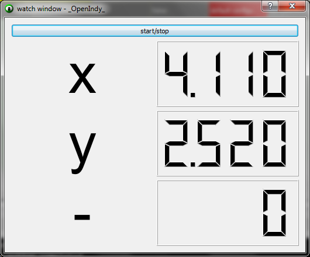
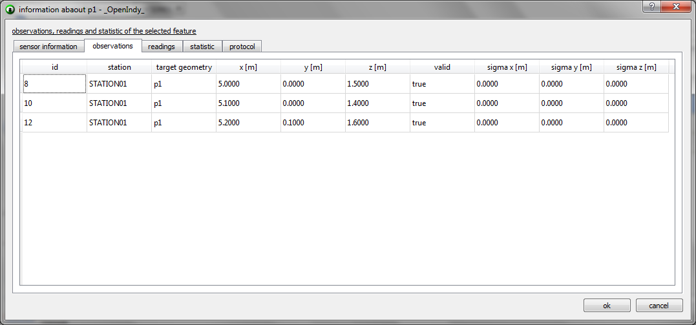
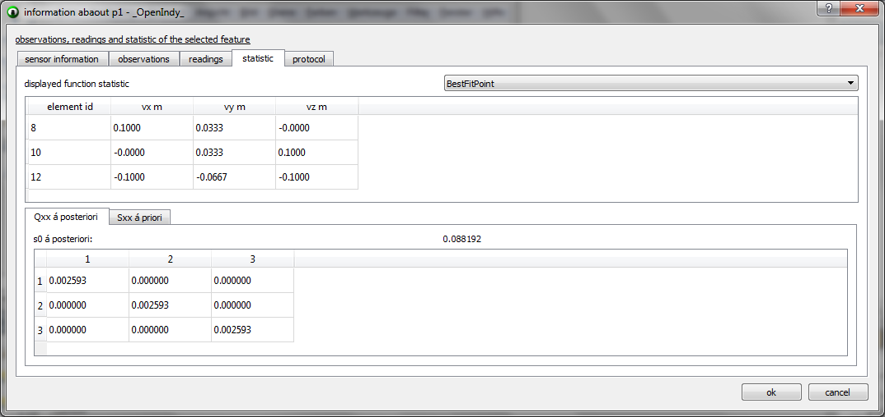

OpenIndy
user guide
https://github.com/openindy

other functionalities
watch window
The watch window is a live stream of the actual readings of the active instrument (e.g. vertical and horizontal angle and distance). It makes it possible to watch the current position of the reflector and if it´s moving. With this functionality it is also possible to watch a position while some works at it and corrects it to its nominal value. The watch window only displays the actual readings and does not store them.

watch window
The plugin developer decides the values that get displayed in the view. So it is dynamic and variable for different tasks.
edit nominal data
In the example measurement we import the nominal data from an ASCII file. It is also possible to create nominal features. For this just check the nominal
checkbox and specify the destination system to which this nominal feature belongs to. Features are linked to each other by their name in transformation. You
can have one actual feature with the same name but multiple nominal features with the same name, if they have other destination systems (e.g. PART, OBJECTSYSTEM,...).
While creating the nominal features by hand you can/ have to specify the values by hand for each feature typ.
The values of nominal features can be
edited by a double click on the nominal feature in the tableview. Then just change the values and apply the dialog. It´s the same like the transformation
parameters.
readings, observations and statistic
Double clicking on an actual feature opens an dialog that gives more information about this feature. In this dialog you can see the observation, that this
feature has with all its attributes like measured values, date, time station,... . Also you can see the observations that are created from the observations
with all their attributes.
Their third and maybe leading tab is the statistic tab. Here you can find all the statistic of the feature and its functions.
All statistic is seperated for each function the feature has. You can switch the function via the combobox. The statistic of the functions is calculated with
variance propagation.

readings of the point feature

observations of the point feature

statistic of the best fit function of the
point feature
station
Double clicking on a station opens the same dialog with one more tab. In this tab you can change the sensor configuration of the current active instrument. So you can change the connection parameters, the accuracy and all the other instrument parameters. You can´t change the instrument in this dialog. To do this you need to click Station > set instrument.
multiple stations
It is possible to have more stations in OpenIndy, because this is neccessary to solve some measurement tasks. All stations are marked light grey in the tableview. The current active station is marked in a darker grey. On default when you start OpenIndy STATION01 is activated. You can switch the active station by marking the one you want to activate in the tableview with one left mouse button click. When it´s marked light blue (active feature) go to Station > activate station. The selected station will then be the active station and you can connect a sensor to it.
sensor functionalities
This section gives a brief description of all current implemented sensor functionalities (sensor + totalstation + lasertracker). The implementation itself depends on the plugin developer and on the implemented sensor, so it can vary between different sensors.
connect
Connects OpenIndy and the sensor
disconnect
Disconnects OpenIndy and the sensor
initialize
Initializes the sensor
home
Sets the sensor to his home position (lasertracker)
measure
starts a measurement
toggle sight orientation
Changes the sensor from frontside to backside and the other way
aim
aims towards the active feature position. The feature needs to be solved for this functionality, that means it has some valid X Y and Z coordinates.
move
The user can specify where the sensor should aim towards
change motor state
enables or disables the motor (lasertracker)
compensation
starts the compensation (lasertracker)